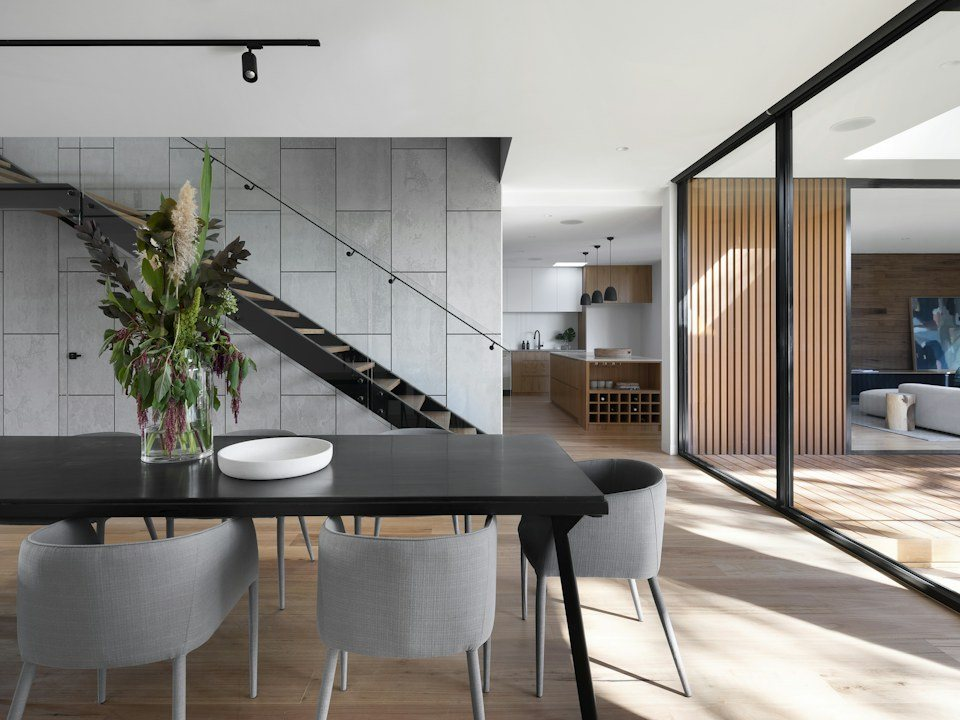

Criterio arquitectónico
Observamos la orientación, los materiales y el recorrido entre ambientes para explicar qué hace singular a cada vivienda.
Nosotros
UrbanSpace reúne casas y departamentos de Lima con un criterio común: que la arquitectura haga más agradable la vida cotidiana.

Nuestra historia
UrbanSpace nació de recorrer Lima a pie. En Miraflores nos llamaron la atención los balcones abiertos al aire del malecón. En Barranco, las casas que guardan un patio detrás de la fachada. De esas visitas surgió una manera de elegir propiedades que empieza por entender su entorno.
Ayudar a cada persona a encontrar una vivienda que encaje con sus rutinas, desde la distribución de los ambientes hasta el barrio que recorrerá cada día.
Ser una referencia en Lima para quienes valoran el diseño residencial y buscan información clara antes de elegir dónde vivir.
Nuestros valores
Observamos la orientación, los materiales y el recorrido entre ambientes para explicar qué hace singular a cada vivienda.
Presentamos precios en dólares, áreas y distribución en un formato común para que puedas comparar propiedades.
Partimos de tus prioridades: un estudio con luz, un jardín o una ubicación cerca de tu trabajo.